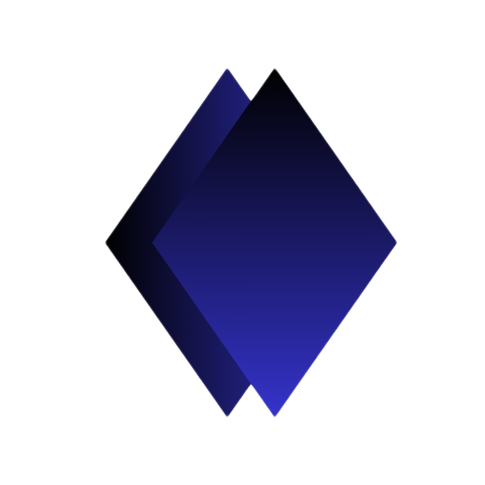
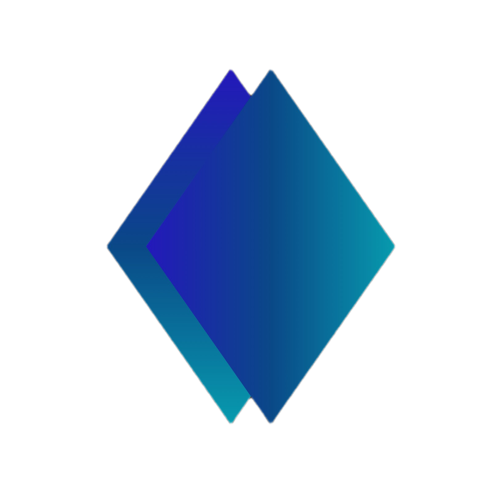

Messaging that feels natural
Kite is being developed to make conversations and everyday communication straightforward and approachable.

Kite Connect is building a more accessible way for people to message, share and stay connected—especially when data is limited or network conditions are less than ideal.
A Nigerian-founded project with a focus on practical, people-first communication.

We’re working toward a digital space where communicating and sharing feel simpler, more accessible and more dependable.
Kite is being developed to make conversations and everyday communication straightforward and approachable.
We’re prioritising a thoughtful experience for people using mobile data and navigating inconsistent network conditions.
Kite’s broader vision brings messaging and social experiences together in one digital home.
Kite combines the ambition of a messaging platform with a social experience. We’re building step by step, testing the product, and working toward making it useful for people with different devices and network conditions.
Our aim is to make digital communication feel less complicated—not to promise perfect connectivity everywhere, but to design with real-world constraints in mind.
Explore the current Kite experience and follow our journey as Kite Connect grows.
We believe the tools people use to communicate should be designed around real people, real devices and real network conditions. Kite Connect is working toward that vision from Nigeria.
Interested in Kite, exploring a partnership, or have a question? Reach out to our team.
For collaboration, strategic partnerships, and questions about Kite Connect.
founder.kiteapp@gmail.com ↗Explore the current web app. Some functionality may still be under development.
kite-frontend-fz0r.onrender.com ↗